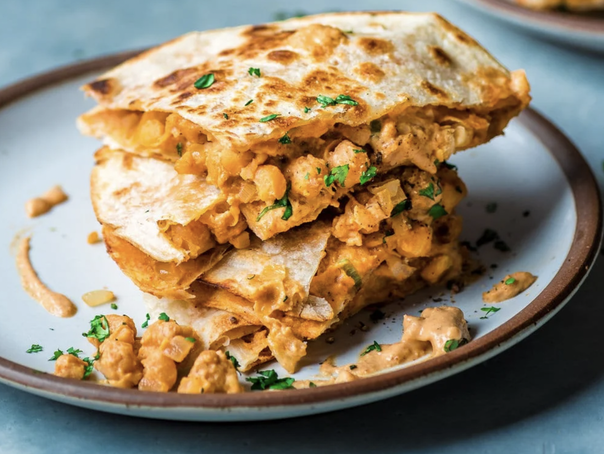

Buffalo Chickpea Quesadilla

Spicy, Spinoff Quesadilla Made With A Creamy Cashew Filling
Part 1: Cashew Pseudo-Cheese Sauce
- 1 cup raw cashews (boiled until soft)
- ½ cup unsweetened plain yogurt*
- 2 tablespoons water OR vegetable broth
- ½ cup salsa of choice
- 1 teaspoon ground cumin
- ½ teaspoon chili powder
- ½ teaspoon smoked paprika
- 1 teaspoon kosher salt
- 2 tablespoons nutritional yeast
- Drain the soaked cashews and pat dry.
- Add the cashews, along with the remaining sauce ingredients, to a high-powered blender.
- Blend until thick, creamy, and smooth.
- The sauce should be quite thick and creamy, but if you would like it to be even thicker, add the sauce to a saucepan over medium-low heat for a few minutes to thicken up slightly.
Part 2: Buffalo Sauce
- ¼ cup (56g) vegan butter (1/2 stick)
- 4 tablespoons Frank hot sauce
- ⅛ teaspoon garlic powder
- A pinch of kosher salt
- 2 teaspoons brown sugar
- Melt the vegan butter in a heatproof bowl in the microwave
- To the melted butter, add the hot sauce, garlic powder, cayenne pepper (if using), salt, and sugar.
- Whisk until the hot sauce and butter are completely incorporated.
Part 3: Chickpea Filling
- 2 teaspoons olive oil
- 1 medium yellow onion, diced
- 4 cloves garlic, minced
- 1 (15-ounce /425g) can chickpea, drained and rinsed
- Pour the drained and rinsed chickpeas in a medium bowl and roughly mash them with a fork or a potato masher, leaving some beans intact.
- Heat the 2 teaspoons oil in a large skillet over medium heat and once the oil is shimmering, add the diced onion. Cook for 4 to 5 minutes or until softened, then add the garlic and cook for an additional 1 minute.
- To the onions, add the buffalo-butter sauce and the mashed chickpeas, and bring the mixture to a boil. Reduce the heat to low and simmer for 2 minutes, stirring occasionally, then turn off the heat.
- Assemble the quesadillas. Spread an even layer of the Mexican Cheese Sauce onto one of the eight tortillas. Arrange about 1/2 cup of the Buffalo Chickpea Filling on top. Place another tortilla on top to cover.
- Lightly grease the large skillet with a bit of oil and place over medium heat. Once hot, add the prepared quesadilla to the skillet. Place a smaller skillet on top of the quesadilla so that it presses down on the quesadilla, resulting in a nice crispy exterior.